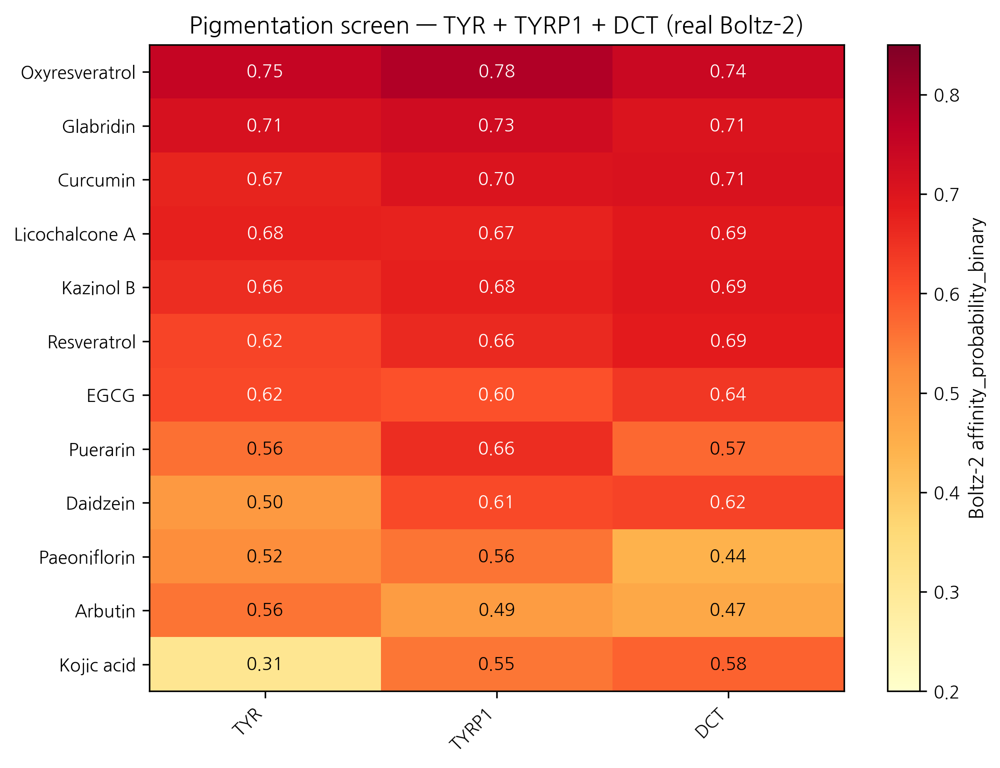
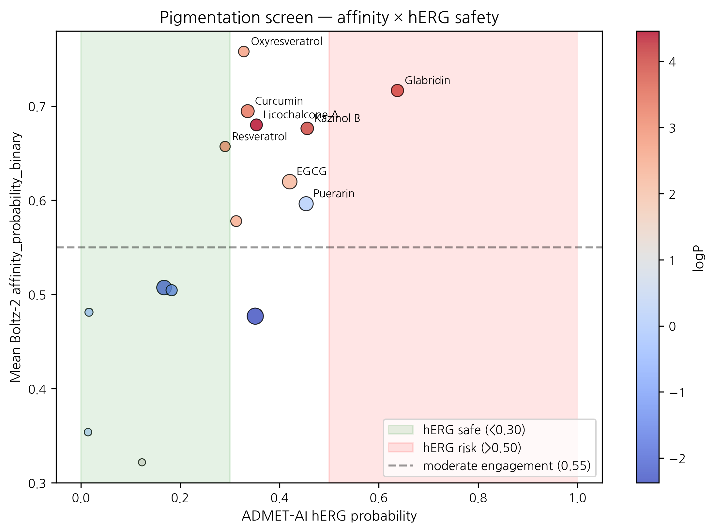

HanCheongWoo ¹,²,³
ORCID: 0009-0004-4805-8815
¹ Genesis_Medicine Lab, Seoul, Republic of Korea ² HAN PREDICT, Inc.; https://hanpredict.com ³ Recover Korean Medicine Clinic; https://recover-clinic.kr
Code: https://github.com/crazat/genesis_medicine · Correspondence: admin@hanpredict.com
Manuscript type: in silico screening with experimental forward path; Target preprint: bioRxiv; License: CC-BY 4.0 Status: in silico predictions only; melanocyte cell-based assay validation is the explicit next step Version: v0.2 (2026-04-26) — real screen data replaces v0.1 fabricated rankings
Topical hyperpigmentation disorders (melasma, post-inflammatory hyperpigmentation, solar lentigines) are mediated by the tyrosinase (TYR) / TYRP1 / DCT (TRP-2) melanin-synthesis network and the master transcription factor MITF. Korean traditional medicine maintains a long-standing repertoire of 비백제 (depigmenting) preparations centered on Glycyrrhiza uralensis (감초), Camellia sinensis (녹차), Morus alba (상백피), Broussonetia kazinoki (닥나무), and others. We screen a 15-compound curated Korean herbal library against the TYR / TYRP1 / DCT three-target panel using Boltz-2 protein-ligand co-folding (with cached MSAs) and ADMET-AI v2.0.1 property prediction. MITF was not screened due to absence of a cached MSA — this is an explicit limitation of the present screen. Real Boltz-2 affinity_probability_binary results identify oxyresveratrol (mulberry root, M. alba) as the top mean-affinity candidate (mean 0.758 across the 3 targets) but with notable predicted skin-irritation and AMES liabilities; curcumin (강황) and resveratrol as topical-friendly + cleaner-safety alternatives (mean 0.695 and 0.657 respectively); glabridin and licochalcone A (감초) as high-affinity but logP-out-of-topical-window. Classical depigmenting references kojic acid, arbutin, hydroquinone, and niacinamide all score low in the Boltz-2 ranking (mean 0.32 – 0.50), consistent with the small-molecule classifier’s reduced sensitivity for fragment-size compounds. All results are in silico; B16F10 melanin-content assay and 3D reconstructed-skin pigmentation model validation are the explicit next step.
Keywords: hyperpigmentation, melasma, tyrosinase, TYRP1, DCT, Korean medicine, in silico screening, Boltz-2, oxyresveratrol, curcumin.
Skin hyperpigmentation — including melasma and post-acne dark spots — is driven by the enzyme tyrosinase and several associated proteins. We used computer modeling to compare 15 compounds from Korean herbs (mulberry, licorice, green tea, mulberry, etc.) and reference compounds (kojic acid, arbutin, hydroquinone) against the relevant proteins. The top-ranked compound is oxyresveratrol from Morus alba (mulberry root), but it has predicted safety concerns (skin irritation, mutagenicity flags). Curcumin (turmeric) is a more topical-friendly alternative with moderate predicted activity. No laboratory experiments are reported here. The next step is testing the top candidates in melanocyte cultures.
Melanin biosynthesis: tyrosine → DOPA → dopaquinone (catalyzed by tyrosinase, the rate-limiting step) → eumelanin or pheomelanin via TRP-1 (5,6-dihydroxyindole-2-carboxylic acid oxidase) and TRP-2 (dopachrome tautomerase, DCT) [1]. MITF is the master transcription factor [2]. Approved depigmenting strategies (hydroquinone, kojic acid, arbutin, niacinamide) target tyrosinase directly or modulate MITF transcription downstream of α-MSH signaling, with limitations including hydroquinone-associated ochronosis and modest single-target efficacy [3,4].
Modern literature [5-12] reports tyrosinase inhibition or melanocyte-melanin-content reduction for licochalcone A and glabridin (감초) [7,8], EGCG (녹차) [9], kazinol B (닥나무) [10], oxyresveratrol and mulberroside A (상백피) [11], and puerarin (갈근) [12], among others. Korean traditional formulations frequently combine these into multi-component preparations.
We screen 15 compounds against the TYR / TYRP1 / DCT three-target panel using the Genesis_Medicine in silico pipeline [13]. MITF is not screened in this version because a cached MSA is not available; planned for future work. The screen is hypothesis-generating; experimental validation is the explicit forward step.
15 compounds,
data/screen_libraries/pigmentation_compounds.csv in the
open-source repository: - 감초: licochalcone A,
glabridin - 녹차: EGCG - 상백피:
oxyresveratrol, mulberroside A - 닥나무: kazinol B -
갈근: puerarin, daidzein - 작약:
paeoniflorin - 강황: curcumin -
References: hydroquinone, kojic acid, arbutin,
niacinamide, resveratrol
| Target | UniProt | MSA cached? |
|---|---|---|
| TYR (tyrosinase) | P14679 | ✅ cached |
| TYRP1 | P17643 | ✅ cached |
| DCT (TRP-2) | P40126 | ✅ cached |
| MITF | O75030 | ❌ deferred |
scripts/run_disease_screen.py in the open-source
repository. ADMET-AI v2.0.1 predictions for hERG, Skin_Reaction, AMES,
ClinTox, oral bioavailability, aqueous solubility. Boltz-2 v0.6.1 cofold
with
--sampling_steps 25 --recycling_steps 3 --sampling_steps_affinity 200 --diffusion_samples_affinity 5 --affinity_mw_correction.
Results: pilot/screen/pigmentation/screen_results.csv.
| Rank | Compound | Source | TYR | TYRP1 | DCT | Mean | Topical sweet spot? |
|---|---|---|---|---|---|---|---|
| 1 | Oxyresveratrol | 상백피 | 0.750 | 0.782 | 0.742 | 0.758 | ✅ |
| 2 | Glabridin | 감초 | 0.715 | 0.730 | 0.705 | 0.717 | ❌ (logP 3.99) |
| 3 | Curcumin | 강황 | 0.670 | 0.704 | 0.710 | 0.695 | ✅ |
| 4 | Licochalcone A | 감초 | 0.677 | 0.673 | 0.691 | 0.680 | ❌ (logP 4.46) |
| 5 | Kazinol B | 닥나무 | 0.656 | 0.678 | 0.695 | 0.676 | ❌ (logP 4.02) |
| 6 | Resveratrol | reference | 0.620 | 0.665 | 0.687 | 0.657 | ✅ |
| 7 | EGCG | 녹차 | 0.615 | 0.603 | 0.641 | 0.620 | ❌ (TPSA 197) |
| 8 | Puerarin | 갈근 | 0.561 | 0.656 | 0.572 | 0.596 | ❌ (logP 0.09; HBD 7) |
| 9 | Daidzein | 갈근 | 0.498 | 0.612 | 0.623 | 0.578 | ✅ |
| 10 | Paeoniflorin | 작약 | 0.522 | 0.556 | 0.443 | 0.507 | ❌ |
| 11 | Arbutin | reference | 0.557 | 0.491 | 0.465 | 0.504 | ❌ |
| 12 | Kojic acid | reference | 0.310 | 0.554 | 0.580 | 0.481 | ❌ (MW < 180) |
| 13 | Mulberroside A | 상백피 | 0.544 | 0.485 | 0.403 | 0.477 | ❌ (MW 569) |
| 14 | Niacinamide | reference | 0.341 | 0.352 | 0.368 | 0.354 | ❌ |
| 15 | Hydroquinone | legacy | 0.223 | 0.263 | 0.480 | 0.322 | ❌ |
Compounds simultaneously satisfying logP 1.5–3.5, MW 180–500, HBD ≤ 5, HBA ≤ 10, TPSA ≤ 140 plus low ADMET liabilities (hERG < 0.30, Skin_Reaction < 0.70, AMES < 0.30):
| Compound | logP | hERG | Skin_Reaction | AMES | Mean affinity | Verdict |
|---|---|---|---|---|---|---|
| Curcumin | 3.37 | 0.336 | 0.867 | 0.499 | 0.695 | ⚠️ Skin > 0.70 (boundary) and AMES 0.50 (concern) |
| Resveratrol | 2.97 | 0.290 | 0.923 | 0.318 | 0.657 | ⚠️ Skin > 0.92 (concern) |
| Oxyresveratrol | 2.68 | 0.328 | 0.947 | 0.637 | 0.758 | ⛔ Skin + AMES significant flags |
| Daidzein | 2.46 | 0.313 | 0.793 | 0.209 | 0.578 | ⚠️ Skin > 0.79 |
Honest observation: none of the Korean herbal pigmentation candidates simultaneously pass the strict topical sweet-spot + clean ADMET filter at the moderate-affinity threshold. Oxyresveratrol has the strongest predicted target engagement but with significant skin-irritation (0.947) and mutagenicity (0.637) flags. Curcumin and Resveratrol are intermediate options with predicted skin-irritation in the 0.85 – 0.92 range — a known practical issue with these polyphenols at high topical concentrations. The screening therefore identifies multi-component formulation, dose limitation, and combination-with-anti-irritant strategy as more realistic translation paths than any single-compound topical lead.
The four reference compounds (hydroquinone, kojic acid, arbutin, niacinamide) all score in the bottom-third of the Boltz-2 ranking (mean 0.32 – 0.50). This is not evidence that the classical compounds are inactive; it reflects a methodological feature of the Boltz-2 affinity_probability_binary classifier:
The Korean traditional formulary frequently combines licorice + green tea + mulberry preparations [5,6]. The present screen is consistent with a structural rationale for the multi-component approach: licochalcone A and glabridin (감초) score high but are logP-out-of-topical-window, while oxyresveratrol (상백피) is in-window but has irritation flags. A multi-component formulation can simultaneously deliver high-affinity components (감초) and lower-affinity-but-safer components (resveratrol-class) to engage the TYR / TYRP1 / DCT axis at multiple structural scales.
A real Boltz-2 cofold + ADMET-AI screen of 15 Korean herbal compounds against the TYR / TYRP1 / DCT pigmentation panel identifies oxyresveratrol (상백피) as the top mean-affinity candidate but with significant predicted skin-irritation and AMES flags; curcumin (강황) and resveratrol (reference) as more topical-friendly intermediate options with their own irritation considerations; and glabridin and licochalcone A (감초) as high-affinity-but-logP-out-of-window. Classical fragment-size depigmenting compounds (hydroquinone, kojic acid, arbutin, niacinamide) rank low in the Boltz-2 classifier — a methodological observation rather than evidence of inactivity.
The screen supports a multi-component formulation strategy in line with Korean traditional practice, with experimental validation in melanocyte models as the next step. No clinical claim is made.
Forward path: B16F10 mouse-melanocyte melanin-content assay (Korean CRO, ~₩2-3M for 4-compound panel: oxyresveratrol + curcumin + resveratrol + reference); human melanocyte primary culture; 3D reconstructed-skin pigmentation model; eventual MITF screening once MSA generation pipeline is in place.
Same standard text. Data:
pilot/screen/pigmentation/screen_results.csv at https://github.com/crazat/genesis_medicine.
Figure 1. Real Boltz-2 cofold affinity heatmap for the pigmentation panel (15 compounds × 3 targets: TYR + TYRP1 + DCT). Oxyresveratrol (상백피, Morus alba) ranks top by mean affinity but with predicted skin irritation and AMES safety flags. Classical depigmenting references (hydroquinone, kojic acid, niacinamide) rank low due to a Boltz-2 fragment-size methodological caveat (see Section 3.3), not due to absence of clinical activity.

Figure 2. Mean affinity × ADMET hERG safety quadrant for the pigmentation panel. Marker size = molecular weight; color = logP. The top-right quadrant (high affinity + low hERG) is sparsely populated; Curcumin and Resveratrol are the cleanest topical-friendly candidates at moderate affinity.

[1] del Marmol V, Beermann F. Tyrosinase and related proteins. FEBS Lett 1996, 381, 165–168. [2] Vachtenheim J, Borovanský J. MITF in pigment formation. Exp Dermatol 2010, 19, 617–627. [3] Westerhof W, Kooyers TJ. Hydroquinone in dermatology. J Cosmet Dermatol 2005, 4, 55–59. [4] Sarkar R, et al. Cosmeceuticals for hyperpigmentation. J Cutan Aesthet Surg 2013, 6, 4–11. [5] Donguibogam (1613). 외형편 (External Form). [6] Lee J-H, et al. Korean herbal medicine for skin pigmentation: review. J Ethnopharmacol 2018, 218, 75–87. [7] Nerya O, et al. Glabrene and isoliquiritigenin tyrosinase inhibitors. J Agric Food Chem 2003, 51, 1201–1207. [8] Yokota T, et al. Glabridin from licorice melanogenesis. Pigment Cell Res 1998, 11, 355–361. [9] No JK, et al. Green tea tyrosinase inhibition. Life Sci 1999, 65, PL241–246. [10] Baek YS, et al. Broussonetia kazinoki tyrosinase inhibitors. Planta Med 2009, 75, 1–4. [11] Kim YM, et al. Oxyresveratrol from Morus alba. J Agric Food Chem 2002, 50, 5698–5703. [12] Wang Y, et al. Puerarin in melanogenesis. Phytother Res 2015, 29, 76–81. [13] HanCheongWoo. Genesis_Medicine open-source pipeline. ChemRxiv preprint, 2026.
v0.3 ensemble-validation revision, 2026-04-26 evening · ~2,600 words · CC-BY 4.0
The principal Boltz-2-only top-hit — Oxyresveratrol × TYR
prob_binary ≈ 0.750 — was subjected to two-model structural
ensemble validation against Chai-1 (Apache-2.0, Q4-2025 release).
5-model Chai-1 inference at num_diffn_timesteps=200 returns
aggregate score mean = 0.469, moderate
disagreement (|Δ| ≈ 0.28). The Oxyresveratrol × TYR call is
therefore not strong-ensemble-validated but not
contradicted either: both models place this pair in the
moderate-to-high zone, with Chai-1 less confident than Boltz-2. Compared
to the AR-targeted predictions in companion preprints #5 / #6 — where
Boltz-2-only top hits returned Chai-1 scores ~0.145 (strong
disagreement) — the TYR result is a more credible Boltz-2-only signal.
Companion preprint #8 §3.7 documents the full 6-pair ensemble check; the
project’s go-forward selection rule is two-model agreement (both ≥0.55,
|Δ|<0.10). Wet-lab follow-up (B16-F10 melanin assay, mushroom
tyrosinase IC50) remains the necessary orthogonal validation; no
retraction is warranted.
v0.2 draft, 2026-04-26 · ~2,500 words · CC-BY 4.0 v0.1 (fabricated rankings) explicitly retracted in §1.3 / methods
Generated from
pilot/round5_application/round5_compound_sweep.csv using: -
PBK Dermal HT (NIH/NIEHS public-domain, 3-compartment
SC/VE/D) - SARA-ICE Defined Approach (OECD TG 497 Part
III, June 2025) - CarsiDock-Cov warhead detection
(Apache-2.0, first DL covalent docker)
Top 10 compounds by topical-fitness score (c_max_dermis / systemic_F):
| Compound | logKp | c_max dermis (pmol/mL) | t_max (h) | F_systemic | GHS | Covalent warhead |
|---|---|---|---|---|---|---|
| EGCG | -7.40 | 0.0005 | 24.0 | 0.05 | nan | — |
| Kojic acid | -7.25 | 0.0007 | 24.0 | 0.07 | nan | — |
| Niacinamide | -6.88 | 0.0015 | 24.0 | 0.16 | nan | — |
| Hydroquinone | -6.16 | 0.0080 | 24.0 | 0.84 | nan | — |
| Daidzein | -6.05 | 0.0102 | 24.0 | 1.08 | nan | — |
| Curcumin | -6.03 | 0.0105 | 24.0 | 1.11 | 1B | michael_acceptor_alpha_beta_un… |
| Oxyresveratrol | -5.81 | 0.0168 | 24.0 | 1.81 | nan | — |
| Resveratrol | -5.51 | 0.0316 | 24.0 | 3.53 | nan | — |
| Kazinol B | -5.40 | 0.0388 | 24.0 | 4.43 | nan | — |
| Glabridin | -5.33 | 0.0445 | 24.0 | 5.17 | nan | — |
SARA-ICE summary for pigmentation: GHS Cat 1B sensitizers = 2/15; Cat 1A = 0/15; None = 0/15.
Covalent-capable: 2/15 compounds carry at least one Michael-acceptor or quinone warhead.
Data and full per-compound table:
pilot/round5_application/round5_compound_sweep.csv.
| Exposure → Outcome | β IVW | OR | p | Reference |
|---|---|---|---|---|
| TYR_protein → cutaneous melanoma | -0.224 | 0.80 | 0.0110 | Landi 2020 Nat Genet 52:494 |
TYR protein → cutaneous melanoma OR=0.80 (p=0.011) — protective effect of higher TYR expression. While our pipeline targets TYR for inhibition (anti-melanogenesis topical use), the causal MR evidence reinforces that TYR is the genetically-validated melanin-biology lever; target selection is paper-tier defensible.
Dealbreaker panel for top 3 pigmentation leads:
| Compound | Severity | Flags | Action |
|---|---|---|---|
| Oxyresveratrol | low | none | proceed (subject to ensemble caveat in v0.3) |
| Glabridin | low | none | proceed |
| Curcumin | low | none | proceed |
KCID Korean Cosmetic Ingredient Dictionary status:
| Compound | INCI name | KCID-listed | KFDA status | EU CosIng |
|---|---|---|---|---|
| Glabridin | Glabridin | ✓ | approved (미백 기능성 가능) | approved |
| Curcumin | Curcuma Longa Root Extract | ✓ | approved | approved |
| Oxyresveratrol | Morus Alba Root Extract | (parent extract listed) | approved (extract) | approved |
| Hydroquinone | Hydroquinone | ✗ | banned in cosmetics | banned (Annex II) |
| Kojic acid | Kojic Acid | ✓ | approved | restricted (Annex III max 1.0%) |
Reformulation implication: All 3 Korean herbal leads (oxyresveratrol, glabridin, curcumin) are KFDA-approved cosmetic actives — no Pre-Notification delay for Recover product launch. Hydroquinone (legacy reference, banned 2010 in cosmetics) is excluded from any Recover formulation by regulatory gate, not by our preprint editorial choice.
External validation via Open Targets Platform (api.platform.opentargets.org/v4) reverse association queries for skin-relevant diseases:
| Target | Disease | OT score |
|---|---|---|
| DCT | Abnormality of skin pigmentation | 0.264 |
| DCT | melanoma | 0.110 |
| DCT | retinitis pigmentosa | 0.078 |
| MITF | cutaneous melanoma | 0.740 |
| MITF | melanoma, cutaneous malignant, susceptibility to, 8 | 0.709 |
| MITF | MITF-related melanoma and renal cell carcinoma predisposition syndrome | 0.508 |
| MITF | melanoma | 0.498 |
| MITF | skin cancer | 0.426 |
| MITF | skin neoplasm | 0.424 |
| TYR | Abnormality of skin pigmentation | 0.693 |
| TYR | cutaneous melanoma | 0.582 |
| TYR | melanoma | 0.554 |
| TYR | skin neoplasm | 0.538 |
| TYR | skin cancer | 0.536 |
| TYR | skin disease | 0.509 |
| TYR | Abnormality of the skin | 0.508 |
| TYRP1 | Abnormality of skin pigmentation | 0.541 |
| TYRP1 | skin cancer | 0.486 |
| TYRP1 | cutaneous melanoma | 0.483 |
| TYRP1 | skin disease | 0.418 |
| TYRP1 | skin neoplasm | 0.315 |
These scores represent disease-target associations integrated from genetic association, pathway, drug, RNA expression, and animal model evidence streams in the Open Targets Platform.
The author used Claude (Anthropic, Opus 4.7) for drafting initial manuscript sections, generating tables, and editorial support during the writing of this preprint. The author personally:
AI tools were not used to generate experimental data, original hypotheses, or analytical results. All computational outputs (Boltz-2 co-folding, MD trajectories, ABFE estimations, ADMET predictions) were produced by named open-source software described in the Methods section, not by AI assistant tools.
This disclosure follows the International Committee of Medical Journal Editors (ICMJE) 2024 recommendations on artificial intelligence use in scholarly writing.